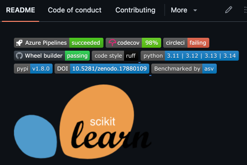

7 Project structure and management
One of the keys to efficient software development is good project organization. Above all else, using a consistent organizational scheme makes development easier because it allows one to rely upon defaults rather than making decisions, and to rely upon shared assumptions rather than asking questions. In this chapter I will talk about various aspects of project organization and management. I will discuss the use of computational notebooks and ways to make them more amenable to a reproducible computational workflow, as well as when and how to move beyond notebooks. I will then discuss file and folder organization within a project. But I start with a broad overview of the goals of a scientific project, to motivate the rest of the discussion.
7.1 The goals of a scientific software project
7.1.1 It needs to work
This might seem like an obvious point: In order for a software project to be useful, the software first and foremost needs to be written and to run successfully. However, the point may not be as obvious as it seems: In particular, many researchers can get stuck trying to plan and generate code that is as perfect as possible, and never actually generate code that runs well enough to solve their problem. Remember the Agile software development idea that we discussed in Chapter 3, which stresses the importance of “working software” over clean, well-documented code. This is not to say that we don’t want clean, well-documented code in the end; rather, it implies that we should first get something working that solves our problem (the “minimum viable product”), and once we have that we can then clean up, refactor, and document the code to help address the next goals. Don’t let the perfect be the enemy of the good!
7.1.2 It needs to work correctly
Once it runs, our main goal is to make sure that our scientific code solves the intended problem correctly. There are many ways in which errors can creep into scientific code:
The wrong algorithm may be chosen to solve the problem. For example, you might be analyzing count data that have a high prevalence of zeros, but use a statistical model like linear regression that assumes normality of the model errors. The data thus violate the assumptions of the selected algorithm.
The right algorithm may be implemented incorrectly. For example, you might implement the hurdle regression model for zero-inflated count data, but use an incorrect implementation (like the one that is often recommended by AI coding tools, as discussed in the previous chapter). Or there may be an typographic error in the code that results in incorrect results.
The algorithm may not perform properly. For example, one might use a linear mixed effects model that is estimated using a maximum likelihood method, but the estimation procedure doesn’t converge for the particular dataset and model specification, leading to potentially invalid parameter estimates. Similarly, an optimization procedure may return parameter estimates that are located at the boundaries of the procedure, suggesting that these estimates are not valid.
The assumptions about the data structure may be incorrect. For example, a variable label in the data may suggest that the variable means one thing, when in fact it means different things for different observations depending on their experimental condition.
These are just a few examples of how code that runs may return answers that are incorrect, each of which could lead to invalid scientific claims if they are not caught.
7.1.3 It needs to be understandable
As I discussed in the section in Chapter 3 on clean coding, one of the most important features of good code is readability. If the code is not readable, then it will be difficult for you or someone else to understand it in the future. Language models also benefit greatly from readable code, making it much easier for them to infer the original intent and goals of the code (even if they can often do this successfully even with unreadable code).
7.1.4 It needs to be portable
It’s rare for one to perform analyses that are only meant to run on one specific computer system. Coding portably (as discussed in Chapter 3) makes it easy to run the code on other machines. This can be useful, for example, when one replaces one’s laptop, or when one needs to scale their code to run on a high-performance computing system. It also helps ensure that the code can be tested using automated testing tools, like those discussed in Chapter 4.
7.2 Project structure
Having a consistent project organization scheme is key to making projects as easily understandable as possible. There is no single scheme that will be optimal for everyone, since different types of research may require different kinds of organizational schemes.
7.2.1 Should code and data live alongside one another?
One important initial question is whether code and data should live within the same directory. This will often ride on the size of the data: If the data are small enough that they don’t cause space problems on the filesystem where the code lives, then it might make sense to include the data in a subdirectory within the project directory. I will discuss in a later chapter on Data Sharing whether one should share one’s data via Github; for this chapter I’ll focus on local organization.
For my projects with datasets larger than a few gigabytes, I tend to keep data separate from code for the following reasons.
For the projects that use our local high-performance computing system, we have a dedicated location on the file system where data are stored in a read-only way to prevent them from being changed inadvertently, and where they can be accessed by any user with permissions to access that particular dataset. Individual users keep their code in separate project directories and pull data from those shared directories.
In some cases it’s useful to remotely mount a filesystem (such as mounting the storage system on the local cluster via sshfs) to allow reading of data without actually downloading the entire dataset.
For projects that I run on my laptop, I keep my code folders inside my Dropbox folder, so that they are continually backed up. I highly recommend this, as it allows one to go back in time and restore deleted files (assuming one’s Dropbox account supports this feature), and also allows one to keep a hot spare system that has a current version of all of one’s code (e.g., in case one spills coffee on their laptop and fries it). For larger datasets I often don’t want to put them into Dropbox due to the size that they take up.
In general, for portability it’s also nice to have the data location parameterized in the code (e.g., via a .env file or local config file) rather than hardcoded through the use of a local directory name. Thus, even if you decide to put the data within the code directory, it’s good to write the code in a way that can allow the data to live in an arbitrary location.
7.2.2 Folder structure
A consistent and rational folder structure is key to good project organization. For a simple Python project, I recommend starting using the package organization provided by uv.
$ uv init --package myproject
Initialized project `myproject` at `myproject`
$ tree myproject
myproject
|-- pyproject.toml
|-- README.md
`-- src
`-- myproject
`-- __init__.pyUsing this structure will make it easy to generate a Python module from your code, located within the src/<projectname> directory. I would also consider adding the following directories, depending on your specific use case:
data: if you plan to keep data within your project directorynotebooks: for interactive notebooks, which I prefer to keep separate from module coderesults: for output from codescripts: for executable scripts (e.g., bash scripts). Note: For Python scripts I prefer to use theproject.scriptsfunctionality inuv, which allows one to point to a particular function within a code file as the entrypoint for an executable script.tests: for software tests. While one can put tests alongside code within thesrc/<projectname>directory, it is customary to put them in a separatetestsdirectory within the main project directory. This keeps test code separate from project code, and makes it easy to find all of the tests.
I would suggest setting these all up when you create the project, so there won’t be any temptation to cut corners down the road. There are tools known as cookiecutters that can automate the creation of standard directory structures, which can be helpful for larger groups to ensure the generation of standardized directory structures.
7.2.2.1 Organizing Python code
Another question arises regarding whether one should have subdirectories (often called subpackages) within the source directory for different components of the project. Here is an example of what the structure might look like when all of the project files are at the same level in the base directory:
mypackage/
|-- init.py
|-- core.py
|-- utils.py
|-- exceptions.py
|-- config.py
`-- validators.pyOn the other hand, we might instead consider breaking similar functions into subpackages:
mypackage/
|-- __init__.py
|-- models/
| |-- __init__.py
| |-- user.py
| `-- product.py
|-- api/
| |-- __init__.py
| |-- routes.py
| `-- serializers.py
|-- services/
| |-- __init__.py
| `-- auth.py
`-- utils/
|-- __init__.py
`-- helpers.pyIn general the flat structure is to be preferred because it is simpler. In particular, the user can easily import modules, e.g., from mypackage import utils. This is possible with the nested structure using subpackages, though the import statements become longer; keeping the same short import commands requires adding additional code to the __init__.py file to load the modules within the subpackage. As you may remember from Chapter 3, I try to avoid putting code into __init__.py at all costs because I think it’s a common source of confusion in debugging. However, if you have a large number of modules that form clear functional groupings, then it’s worth considering moving to a nested structure, which may be more intuitive for users as the package gets complex.
7.2.3 Folder naming
The general principles of variable naming that we discussed in Chapter 3 should also apply to folder naming: Use names that are as specific and accurate as possible, and be sure that you use those folders in the appropriate way.
Let’s say that you generate a set of subfolders within the data and results folders:
data/
|-- preprocessed/
`-- raw/
results/
|-- figures/
|-- modeling/
`-- preprocessing/It’s important to first note that some distinctions that seem like they should be obvious, like “raw” versus “preprocessed” data, can often hide much more complexity than meets the eye. In fact, I once spent several hours at a workshop in a discussion of what exactly counts as “raw” data in a particular field of neuroimaging. What’s most important is that you come up with a definition and stick with it, so that it will be clear what goes where. It’s also probably worth noting in a README file if there are any such definitions that are important to understanding what goes where; for example, “Here ‘raw’ refers to data that have been downloaded directly from the measurement device, with no additional processing applied.”
You will likely want to have some additional folder structure within each of these directories, and it’s important to use a smart naming scheme. Any time there is more than one parameter that varies across the subfolders, I generally prefer a naming scheme that using key-value pairs separated by underscores, which derives from the Brain Imaging Data Structure (BIDS) standard that we were involved in developing (Poldrack et al. 2024). For example, let’s say that we have several different types of decoding models that will be fit and stored under the modeling subdirectory, which vary by the fitting method (“svm” versus “logreg”) and the regularization type (“L1”, “L2”, or “elasticnet”). We could generate directories for each of these using the following scheme:
modeling/
|-- method-logreg_reg-elasticnet
|-- method-logreg_reg-L1
|-- method-logreg_reg-L2
|-- method-svm_reg-elasticnet
|-- method-svm_reg-L1
`-- method-svm_reg-L2Each entry is defined in terms of a set of key-value pairs (where the key and value are separated by a dash), which are separated by underscores. One substantial benefit of this scheme is that it can easily be parsed in an automated way (i.e. first splitting by underscores to obtain the key-value pairs, and then splitting each by the dash to obtain the respective key and value). It is important to be very careful not to include additional dashes or underscores within the values, since this will defeat the ability to reliably parse the folder names.
7.2.4 Folder numbering
There are some cases where it makes sense to number folders, as when there are discrete steps in a workflow that one wants to keep in order. One good habit for numbering in file names is to use zero-padded numbers, with enough padding to cover all possible values. For example, let’s say that one wants to number folders for individual figures. If you are certain that there will not be more than 9 figures, then it’s ok to number them with single digits, but in general I would err on the side of including at least one level of zero-padding. Otherwise, figures will not easily sort by number if there end up being more than 9 figures:
$ ls -1
figure-1
figure-10
figure-11
figure-2
figure-3
figure-4
figure-5
figure-6
figure-7
figure-8
figure-9Whereas it sorts properly with zero-padding:
$ ls -1
figure-01
figure-02
figure-03
figure-04
figure-05
figure-06
figure-07
figure-08
figure-09
figure-10
figure-11
figure-127.3 Computational notebooks
The advent of the Jupyter notebook has fundamentally changed the way that many scientists do their computational work (Granger & Pérez 2021). By allowing the mixing together of code, text, and graphics, Project Jupyter has taken Donald Knuth’s vision of “literate programming”(Knuth 1992) and made it available in a powerful way to users of many supported languages, including Python, R, Julia, and more. Many scientists now do the majority of their computing within these notebooks or similar literate programming frameworks (such as RMarkdown or Quarto notebooks). Given its popularity and flexibility I will focus on Jupyter, but some of the points raised below extend to other frameworks as well.
The exploding prevalence of Jupyter notebooks is unsurprising, given their many useful features. They match the way that many scientists interactively work to explore and process their data, and provide a way to visualize results next to the code and text that generates them. They also provide an easy way to share results with other researchers. At the same time, they come with some particular software development challenges, which I discuss further below.
7.3.1 What is a Jupyter notebook?
Put simply, a Jupyter notebook is a structured document that allows the mixing together of code and text, stored as a JSON (JavaScript Object Notation) file. It is structured as a set of cells, each of which can be individually executed. Each cell can contain text or code, supporting a number of different languages. The user interacts with the notebook through a web browser or other interface, while the commands are executed by a kernel that runs in the background. I won’t provide an introduction to using Jupyter notebooks here; there are many of them online. Instead, I will focus on the specific aspects of Jupyter notebook usage that are relevant to computational reproducibility.
Many users of Jupyter notebooks work with them via the default Jupyter Lab interface within a web browser, and there are often good reasons to use this interface. However, other IDEs (including VSCode and PyCharm) provide support for the editing and execution of Jupyter notebooks. The main reason that I generally use a standalone editor rather than the Jupyter Lab interface is that these editors allow seamless integration of AI coding assistants. While support for AI assistants within the native Jupyter interface is emerging, at present it is nowhere near the level of the commercial IDEs like VSCode. In addition, these IDEs provide easy access to many other essential coding features, such as code formatting and automated linting.
7.3.2 Patterns for Jupyter notebook development
There are a number of different ways that one can work Jupyter notebooks into their scientific computing workflow. I’ll outline a number of different patterns, which are not necessarily exclusive of one another; rather, they demonstrate a variety of different ways that one might use notebooks in a scientific workflow.
7.3.2.1 All interactive notebooks, all the time
Some researchers do all of their coding interactively within notebooks. This is the simplest pattern, since it only requires a single interface, and allows full interactive access to all of the code. However, in my opinion there are often good reasons not to use this approach. Several of these are drawn from Joel Grus’ famous 2018 JupyterCon talk titled “I don’t like notebooks”, but they all derive from my experience as a frequent user of Jupyter notebooks for more than a decade.
Dependence on execution order
The cells in a Jupyter notebook can be executed in any order by the user, which means that the current value of all of the variables in the workspace depends on the exact order in which the previous cells were executed. While this can sometimes be evident from the execution numbers that are presented alongside each cell, for a complex notebook it can become very difficult to identify exactly what has happened. This is why most Jupyter power-users learn to reflexively restart the kernel and run all of the cells in the notebook, as this is the only way to guarantee ordered execution. This is also an issue that is commonly confusing for new users; I once taught a statistics course using Jupyter notebooks within Google Colab, and I found that student confusions were very often resolved by restarting the kernel and rerunning the notebook, reflecting their basis in out-of-order execution. Out-of-order execution is exceedingly common; an analysis of 1.4 million notebooks from Github by (Pimentel et al. 2019) found that for notebooks in which the execution order was unambiguous, 36.4% of the notebooks had cells that were executed out of order. Fortunately there is an easy solution to this: One simply needs to restart and run the entire notebook in order before saving and committing the file.
Tip
Always "Restart and Run All" before accepting the results of a notebook or commiting it to version control. Otherwise it is likely to suffer from out-of-order execution.
Global workspace
As I discussed earlier in the book, global variables have a bad reputation for making debugging difficult, since changes to a global variable can have wide-ranging effects on the code that can be difficult to identify. For this reason, it’s generally a best practice to encapsulate variables so that their scope is only as wide as necessary. However, all variables are global in a notebook, unless they are contained within a function or class defined within the notebook. The global scope of variables in the notebook means that if there is a variable used within a function with the same name as a variable in the global namespace, that variable can be accessed within the function. I have on more than one occasion seen tricky bugs occur when the user creates a function to encapsulate some code, but then forgets to define a variable within the function that exists in the global state. This leads to the operation of the function changing depending on the value of the global variable, in a way that can be incredibly confusing. It is for this reason that I always suggest moving functions out of a notebook into a module as soon as possible, to prevent these kinds of bugs from occurring (among other reasons); I describe this in more detail below.
Notebooks play badly with version control
Because Jupyter notebooks store execution order in the file, the file contents will change whenever a cell is executed. This means that version control systems will register non-functional changes in the file as a change, since they are simply looking for any modification of the file. I discuss this in much more detail below.
Notebooks discourage testing
Although frameworks exist for code testing within Jupyter notebooks, it is much more straightforward to develop tests for separate functions defined outside of a notebook using standard testing approaches, as outlined in Chapter 4. This a strong motivator for extracting important functions into modules, as discussed further below.
7.3.2.2 Notebooks as a rapid prototyping tool
Often one wants to just explore an idea without developing an entire project, and Jupyter notebooks are an ideal platform for exploring and prototyping new ideas. This is my most common use case for notebooks today. For example, let’s say that I want to try out a new Python package for data analysis on one of my existing datasets. It’s very easy to spin up a notebook and quickly try it out. If I decide that it’s something that I want to continue pursuing, I would then transition to implementing the code in a Python script or module, depending on the nature of the project.
7.3.2.3 Notebooks as a high-level workflow execution layer
Another way to use notebooks is as a way to interactively control the execution of a workflow, when the components of the workflow have been implemented separately in a Python module. This approach addresses some of the concerns raised above regarding Jupyter notebooks, and allows the user to see the workflow in action and possibly examine intermediate products for quality assurance. If one needs to see a workflow in action, this can be a good approach.
7.3.2.4 Notebooks for visualization only
Notebooks shine as tools for data visualization, and one common pattern is to perform data analyses using standard Python scripts/modules, saving the results to output files, and then use notebooks to visualize the results. As long as most of the visualizations are standalone, e.g., as they would be if the visualization code is defined in a separate module, then one can display visualizations in a notebook without concern about state dependence or execution order. Notebooks are also easy to share (see below), which makes them a useful way to share visualizations with others.
7.3.2.5 Notebooks as literate programs
A final way that one might use notebooks is as a way to create standalone programs with rich annotation via the markdown support provided by notebooks. In this pattern, one would use a notebook editor to generate code, but then run the code as if it were a standard script, using jupyter nbconvert --execute to execute the notebook and generate a rendered version. While this is plausible, I don’t think it’s an optimal solution. Instead, I think that one should consider generating pure Python code using embedded notations such as the py:percent notation supported by jupytext, which I will describe in more detail below.
7.3.2.6 Notebooks as a tool to mix languages
It’s very common for researchers to use different coding languages to solve different problems. A common use case is the Python user who wishes to take advantage of the much wider range of statistical methods that are implemented in R. There is a package called rpy2 that allows this within pure Python code, but it can be cumbersome to work with, particularly due to the need to convert complex data types. Fortunately, Jupyter notebooks provide a convenient solution to this problem, via magic commands. These are commands that start with either a % (for line commands) or %% for cell commands, which enable additional functionality.
An example of this can be seen in the mixing_languages.ipynb notebook, in which I load and preprocess some data using Python and then use R magic commands to analyze the data using a package only available within R. In this example, we will work with data from a study published by my laboratory (Eisenberg et al. 2019), in which 522 people completed a large battery of psychological tests and surveys. I will focus here on the responses to a survey known as the “Barratt Impulsiveness Scale” which includes 30 questions related to different aspects of the psychological construct of “impulsiveness”; for example, “I say things without thinking” or “I plan tasks carefully”. Each participant rated each of these statements on a four-point scale from ‘Rarely/Never’ to ‘Almost Always/Always’; the scores were coded so that the number 1 always represented the most impulsive choice and 4 represented the most self-controlled choice.
In order to enable the R magic commands, we first need to load the rpy2 extension for Jupyter:
import pandas as pd
%load_ext rpy2.ipythonIn the notebook, we first load the data from Github and preprocess it in order to convert into into the required format, which is a data frame with one column for each item in the survey (not shown here). Once we have that data frame (called data_df_spread here), we can create a notebook cell that takes in the data frame and performs multidimensional item response theory analysis using the mirt R package, searching for the optimal number of factors according to the Bayesian Information Criterion (BIC):
%%R -i data_df_spread -o bic_values
# Perform a multidimensional item response theory (MIRT) analysis using the `mirt` R package
library(mirt)
# Test models with increasing # factors to find the best-fitting model based on minimum BIC
bic_values <- c()
n = 1
best_model_found = FALSE
fit = list()
while (!best_model_found) {
fit[[n]] <- mirt(data_df_spread, n, itemtype = 'graded', SE = TRUE,
verbose = FALSE, method = 'MHRM')
bic <- extract.mirt(fit[[n]], 'BIC')
if (n > 1 && bic > bic_values[length(bic_values)]) {
best_model_found = TRUE
best_model <- fit[[n - 1]]
cat('Best model has', n - 1, 'factor(s) with BIC =',
bic_values[length(bic_values)], '\n')
} else {
cat('Model with', n, 'factor(s): BIC =', bic, '\n')
n <- n + 1
}
bic_values <- c(bic_values, bic)
}This cell ingests uses the -i flag to ingest the data_df_spread data frame from the previous Python cells; a major advantage of this approach is that it automatically converts the Python data frame to an R data frame. After performing the analysis in R, it then outputs the bic_values variable back into a Python variable (using the -o flag), again automatically converting into a Python data frame. The R session remains active in the background, such that we can use another cell later in the notebook to work with the variables generated in that cell and compute the loadings of each item onto each factor, exporting them back into Python:
%%R -o loadings
loadings <- as.data.frame(summary(best_model)$rotF, verbose=FALSE)The ability to easily integrate code from Python and many other languages is one of the most important applications of Jupyter notebooks for scientists.
7.3.3 Best practices for using Jupyter notebooks
7.3.3.1 Habitually restart kernel and run the full notebook
Most Jupyter users learn over time to restart their kernel and run the entire notebook (or at least the code above a cell of interest) whenever there is any sort of confusing bug. It’s the only foolproof way to make sure that there is no out-of-order execution and that all of the code was executed using the same module versions. A complete run of the notebook using a fresh kernel is the only way to definitively confirm the function of the notebook.
7.3.3.2 Keep notebooks short
A graduate student in my lab once created a notebook that was so long that I began referring to it (sarcastically) as their “big beautiful notebook”. A monster notebook will generally become unwieldy, because it often has dependencies that span across many different parts of the notebook. In addition, a large notebook will often take a very long time to run, making it more difficult to practice the “restart and run all” practice recommended above. Instead of having a single large notebook, it’s better to develop shorter notebooks that are targeted at specific functions. This will also help better encapsulate the data, since they will need to be shared explicitly across the different notebooks.
7.3.3.3 Parameterize the notebook
Because notebooks are often generated in a quick and dirty way, it’s not uncommon to see parameters such as directory names or function settings strewn across the entire notebook. This violates the principles of clean coding that we mentioned in Chapter 3, and makes changes very difficult to effectively implement. Instead, it’s better to define any parameters or settings in a cell at the top of the notebook. In this way, one can easily make changes and ensure that they are propagated throughout the notebook with a simple restart.
7.3.3.4 Extract functions into modules
It’s common for users of Jupyter notebooks to define functions within their notebook in order to modularize their code. This is of course a good practice, but I generally suggest that these functions should be moved to a Python module outside of the Jupyter notebook and imported, rather than being defined within the Jupyter notebook. The reason has to do with the fact that the variables defined in all of the cells within a Jupyter notebook have a global scope. As I discussed in Chapter Three, global variables are generally frowned upon because they can make it very difficult to debug problems. In the case of Jupyter notebooks, I have on more than one occasion been flummoxed by a difficult debugging problem, only to realize that it was due to the use of a global variable within a function. If a function is defined within the notebook then variables within the global scope are accessible within the function, whereas if a function is imported from another module those global variables are not accessible within the function. Another advantage of using a defined function is that having a explicit interface makes the dependencies of the function clearer.
As an example, if we execute the following code within a Jupyter notebook cell:
x = 1
def myfunc():
print(x)
myfunc()the output is 1; this is because the x variable is global, and thus is accessible within the function without being passed. If we instead create a separate python file called ‘myfunc2.py’ containing the following:
def myfunc2():
print(x)and then import this within our Jupyter notebook:
from myfunc2 import myfunc2
x = 1
myfunc2()We will get an error reflecting the fact that x doesn’t exist within the scope of the imported function:
---------------------------------------------------------------------------
NameError Traceback (most recent call last)
Cell In[9], line 3
1 from myfunc2 import myfunc2
2 x = 1
----> 3 myfunc2()
File ~/Dropbox/code/coding_for_science/src/codingforscience/jupyter/myfunc2.py:2, in myfunc2()
1 def myfunc2():
----> 2 print(x)
NameError: name 'x' is not definedExtracting functions from notebooks into a Python module not only helps prevent problems due to the inadvertent use of global variables; it also makes those functions easier to test. And as we learned in Chapter 4, testing is the best way to keep our code base working and to make it easy to change when we need to. Extracting functions also helps keep the notebook clean and readable, abstracting away the details of the functions and showing primarily the results.
7.3.3.5 Avoid using autoreload
When using functions imported from a module, any changes made to the module need to be imported. However, simply re-rerunning the import statement won’t work, since it doesn’t reload any functions that have been previously imported. A trick to fix this is to use the %autoreload magic, which can reload all of the imported modules whenever code is run (using the %autoreload 2 command). This might seem to accelerate the pace of development, but it comes at a steep cost: The problem is that you can’t tell which cells have been run with which versions of the code, so you don’t know which version the current value of any particular variable came from, except those in the most recently run cell. This is a recipe for confusion. The only way to reduce this confusion would be to rerun the entire notebook, as noted above.
7.3.3.6 Use an environment manager to manage dependencies
The reproducibility of the computations within a notebook depend on the reproducibilty of the environment and dependencies, so it’s important to use an environment manager. As noted in Chapter 2, I prefer uv, but one can also use any of the other Python package managers.
7.3.4 Version control with Jupyter notebooks
While notebooks have understandably gained wide traction, they also have some important limitations. Foremost, the structure of the .ipynb file makes them problematic for use in version control systems like git. The file itself is stored as a JSON (JavaScript Object Notation) object, which in Python translates into a dictionary. As an example, we created a very simple notebook and saved it to our computer. We can open it as a json file, where we see the following contents:
{'cells': [{'cell_type': 'markdown',
'metadata': {},
'source': ['# Example notebook']},
{'cell_type': 'code',
'execution_count': 3,
'metadata': {},
'outputs': [],
'source': ['import numpy as np\n', '\n', 'x = np.random.randn(1)']}],
'metadata': {'language_info': {'name': 'python'}},
'nbformat': 4,
'nbformat_minor': 2}You can see that the file includes a section for cells, that in this case can contain either Markdown or Python code. In addition, it contains various metadata elements about the file. One thing you should notice is that each code cell contains an execution_count variable, which stores the number of times the cell has been executed. If we rerun the code in that cell without making any changes and then save the notebook, we will see that the execution count has incremented by one. We can see this by running git diff on this new file after having checked in the previous version:
- "execution_count": 3,
+ "execution_count": 4,This is one of the reasons why we say that notebook files don’t work well with version control: simply executing the file without any actual changes will still result in a difference according to git, and these differences can litter the git history, making it very difficult to discern true code differences.
Another challenge with using Jupyter notebooks alongside version control occurs when the notebook includes images, such as output from plotting commands. Images in Jupyter notebooks are stored in a serialized text-based format; you can see this by perusing the text of a notebook that includes images, where you will see large sections of seemingly random text, which represent the content of the image converted into text. If the images change then the git diff will be littered with huge sections of this gibberish text. One could filter these out when viewing the diffs (e.g., using grep) but another challenge is that very large images can cause the version control system to become slow and bloated if there are many notebooks with images that change over time.
There are tools that one can use to address this, such as nbstripout to remove cell outputs before committing a file, or nbdime to provide “rich diffs” that make it easier to see the differences in the current state versus the last commit. There is also a library called nbdev that provides git hooks (which are scripts that run automatically when code is committed) to help with the git workflow. However, converting notebooks to pure Python code prior to committing is a simpler and more straightforward way to work around these issues.
7.3.5 Converting notebooks to pure Python
The jupytext tool supports several formats that can encode the metadata from a notebook into comments within a python file, allowing direct conversion in both directions between a Jupyter notebook and a pure Python file. I like the py:percent format, which places a specific marker (# %%) above each cell:
# %% [markdown]
# ### Example notebook
#
# This is just a simple example
# %%
import numpy as np
import matplotlib.pyplot as pltThese cells can then be version-controlled just as one would with any Python file. To create a linked Python version of a Jupyter notebook, use the jupytext command:
$ jupytext --set-formats ipynb,py:percent example_notebook2.ipynb
[jupytext] Reading example_notebook2.ipynb in format ipynb
[jupytext] Updating notebook metadata with '{"jupytext": {"formats": "ipynb,py:percent"}}'
[jupytext] Updating example_notebook2.ipynb
[jupytext] Updating example_notebook2.pyThis creates a new Python file that is linked to the notebook, such that edits can be synchronized between the notebook and python version.
7.3.5.1 Using jupytext as a pre-commit hook
If one wants to edit code using Jupyter notebooks while still maintaining the advantages of the pure Python format for version control (assuming one is using git), one option is to apply jupytext as part of a *pre-commit hook, which is a git feature that allows commands to be executed automatically prior to the execution of a commit. To use this function, you must have the pre-commit Python module installed. Automatic syncing of Python and notebook files can be enabled within a git repository by creating a file called .pre-commit-config.yaml within the main repository directory, with the following contents:
repos:
-
repo: local
hooks:
-
id: jupytext
name: jupytext
entry: jupytext --from ipynb --to py:percent --pre-commit
pass_filenames: false
language: python
-
id: unstage-ipynb
name: unstage-ipynb
entry: git reset HEAD **/*.ipynb
pass_filenames: false
language: systemThe first section will automatically run jupytext and generate a pure Python version of the notebook before the commit is completed. The second section will unstage the ipynb files before committing, so that they will not be committed to the git repository (only the Python files will). This will keep the Python and Jupyter notebook files synced while only committing the Python files to the git repository.
7.4 Containers
An article about computational science in a scientific publication is not the scholarship itself, it is merely advertising of the scholarship. The actual scholarship is the complete software development environment and the complete set of instructions which generated the figures. (Buckheit & Donoho 1995)
So far I have discussed the importance of code for reproducibility, and in a later chapter I will talk extensively about the sharing of data. However, the foregoing quote from Buckheit and Donoho highlights the additional importance of the computational platform and environment. When they wrote their paper in 1995 there were no easily accessible solutions for sharing of compute platforms, but a technology known as containerization has emerged that provides an easily implemented and widely accessible solution for the sharing of computational platforms.
To understand the concept of a container, it’s first useful to understand the related idea of the virtual machine (or VM). A VM is like a “computer-in-a-computer”, in the sense that it behaves like a fully functioning computer, despite the fact that it only exists virtually within its host system. If you have ever used a cloud system like Amazon Web Services Elastic Compute Cloud (EC2), you have run a virtual machine; virtualization is how Amazon can run many virtual computers on a single physical computing node. The virtual machine runs a fully functioning version of the operating system; for example, a Windows virtual machine would run a fully functioning version of Windows, even if it’s implemented on an Apple Mac host. One challenge of this is that sharing the virtual machine with someone else requires sharing the entire operating system along with any installed components, which can often take many gigabytes of space.
A container is a way to share only the components that are required to run the intended applications, rather than sharing the entire operating system. This makes containers generally much smaller and faster to work with compared to a virtual machine. Containers were made popular by the Docker software, which allows the same container to run on a Mac, Windows, or Linux machine, because the Docker software runs a Linux virtual machine that supports these containers. Another tool known as Apptainer (apptainer.org/) (a fork of the Singularity project) is commonly used to run containerized applications on high-performance computing (HPC) systems, since Docker requires root access that is not available to users on most shared systems. I will focus on Docker here, given that it is broadly available and that Apptainer can easily convert Docker containers and run them as well, but I will mention Apptainer again in the later chapter on high-performance computing.
A container image is, at present, the most reproducible way to share software, because it ensures that the dependencies will remain fixed. We use containers to distribute software built by our lab, such as fMRIPrep, because it greatly reduces installation hassles for complex applications. All the user needs to do is install the Docker software, and they are up and running quickly. Without the containerized version, the user would need to install a large number of dependencies, some of which might not be available for their operating system. Containers are far from perfect1, but they are currently the best solution we have for reproducible software execution.
7.4.1 Running a Docker container
We will start by running a container based on an existing container image, which is a file that defines the contents of the container. The Docker Hub (hub.docker.com) is a portal that contains images for many different applications. For this example, we will use the Python image, which contains the required dependencies for a basic Python installation.
We first need to pull the container image from Docker Hub onto our local system, using the docker pull command to obtain version 3.13.9 of the container:
$ docker pull python:3.13.9
3.13.9: Pulling from library/python
2a101b2fcb53: Pull complete
f510ac7d6fe7: Pull complete
721433549fef: Pull complete
e2f695ddffd8: Pull complete
17e8deb32a49: Pull complete
bc60d97daad5: Pull complete
6275e9642344: Pull complete
Digest: sha256:12513c633252a28bcfee85839aa384e1af322f11275779c6645076c6cd0cfe52
Status: Downloaded newer image for python:3.13.9
docker.io/library/python:3.13.9Make sure to always specify a valid version of the image and do not use the convenient latest tag, which will lead to unreproducible setups, because the version of the image will depend on the download date.
Now that the image exists on our machine, we can use it to start a container and run a Python command:
$ docker run python:3.13.9 python -c "import sys; print(f'Hello World from Python {sys.version_info.major}.{sys.version_info.minor}.{sys.version_info.micro}')"
Hello World from Python 3.13.9We could also log into the container, to see that it’s really just like any other Unix system. We do this by giving the -it flag to Docker run, which tells it to run in interactive mode and allocate a terminal, which in this case is bash:
$ docker run -it python:3.13.9 bash
root@65bb0e71462d:/# pwd
/
root@65bb0e71462d:/# whoami
root
root@65bb0e71462d:/# ls
bin dev home media opt root sbin sys usr
boot etc lib mnt proc run srv tmp var7.4.2 Mounting local storage within a container
For realistic applications we will often want to be able to access our local storage volumes to be able to process files, run local code, or save outputs. With Docker we can mount a local storage volume to a location within the container using bind. Let’s say that we want to output contents from an operation within the container to a local directory called container-output and that we want this to appear as /data within the container. We can do that using the -v flag to docker run:
$ docker run -it -v ./container-output:/data python:3.13.9 bash
root@d14247359d45:/# cd /data
root@d14247359d45:/data# ls
root@d14247359d45:/data# echo "test output from container" > test_output.txt
root@d14247359d45:/data# more test_output.txt
test output from container
root@d14247359d45:/data# exit
exit
$ ls container-output
test_output.txt
$ more container-output/test_output.txt
test output from container7.4.3 Configuring a Docker image
To create a reproducible software execution environment, we will often need to create our own new Docker image that contains the necessary dependencies and application code. AI coding tools are generally quite good at creating the required Dockerfile that defines the image. I used the following prompt to my AI chatbot:
I would like to generate a Dockerfile to define a \textit{Docker} image based on the python:3.13.9 image. The Python package wonderwords should be installed from PyPi. A local Python script should be created that creates a random sentence using wonderwords.RandomSentence() and prints it. This script should be the entrypoint for the \textit{Docker} container. Create this within docker-example inside the current project. Do not create a new workspace - use the existing workspace for this project.Here is the content of the resulting Dockerfile:
FROM python:3.13.9
# Set working directory
WORKDIR /app
# Install wonderwords package
RUN pip install wonderwords==2.2.0
# Copy the Python script
COPY random_sentence.py .
# Set the entrypoint to run our script
ENTRYPOINT ["python", "random_sentence.py"]The bold commands are specific Dockerfile commands. Of particular importance, ENTRYPOINT defines the command that will be run by default when the container is run. We can then build the image:
$ docker build -t random-sentence-generator .
[+] Building 0.0s (9/9) FINISHED docker:desktop-linux
=> [internal] load build definition from Dockerfile 0.0s
=> => transferring dockerfile: 339B 0.0s
=> [internal] load metadata for docker.io/library/python:3.13.9 0.0s
=> [internal] load .dockerignore 0.0s
=> => transferring context: 2B 0.0s
=> [1/4] FROM docker.io/library/python:3.13.9 0.0s
=> [internal] load build context 0.0s
=> => transferring context: 89B 0.0s
=> CACHED [2/4] WORKDIR /app 0.0s
=> CACHED [3/4] RUN pip install wonderwords==2.2.0. 0.0s
=> CACHED [4/4] COPY random_sentence.py . 0.0s
=> exporting to image 0.0s
=> => exporting layers 0.0s
=> => writing image sha256:02794d11ad789b3a056831da2a431deb2241a5da0b20506e 0.0s
=> => naming to docker.io/library/random-sentence-generator 0.0sWe can now see it in the list of images obtained using docker images:
$ Docker images
REPOSITORY TAG IMAGE ID CREATED SIZE
random-sentence-generator latest 02794d11ad78 5 minutes ago 1.13GB
python 3.13.9 49bb15d4b6f6 2 weeks ago 1.12GBWe then run the container to execute the command:
$ docker run --rm random-sentence-generator
Random sentence: The tangible fairy informs crazy.7.4.4 Using containers as a sandbox for AI agents
In addition to allowing the sharing of reproducible environments, containers also provide a very handy tool in the context of agentic coding tools: They allow us to create a sandboxed computing environment that limits the scope of the agent’s actions. This is essential when one is using agentic tools with disabled access controls. For example, Claude Code usually requires the user to provide explicitly permission for access to particular locations on the local disk (with the option to enable them automatically for the remainder of the session). However, it has a --dangerously-skip-permissions flag (also referred to as “YOLO mode”) that allows one to turn off these permissions, giving the agent complete access to reading and writing files, running scripts or programs, and accessing the internet without any limits. This is primarily meant for use on “headless” computers to automate various processes, but it’s not surprising that users have tried to use it on their own local systems to speed up the development process. While it is possible to run in YOLO mode using a container as a sandbox, I would personally never run this mode on my own personal computer, even within a container, since it can still potentially leak private data.
7.5 Documentation
Good documentation is essential to make code easily usable. It’s often left to the end of a project, and to be honest, that’s sometimes ok: writing detailed documentation too early in a project can result in lots of wasted time if things change in the course of the project. Fortunately, if we follow clean coding practices and judicious commenting of the code, then our code will often be largely self-documenting. In addition, AI coding tools are very good at drafting some aspects of documentation (especially if the code is clean and readable), helping us become more like editors than creators of documentation and reducing the drudgery of writing lots of boilerplate. Thus, we can document as we code in a lightweight way, and then generate comprehensive documentation once the project is ready for public consumption.
Here I will outline the important aspects of documentation for scientific coding projects. It’s important to keep in mind that the quality of documentation will determine, at least in part, the degree to which code is reused by others; speaking for myself, if I am interested in trying out a package but see that the documentation is a mess, I view it as a code smell. Thus, if your goal is to create a package that will be widely reused, then it’s worth spending extra effort on polished documentation. If the code is for a single scientific project and isn’t meant as a package for broad reuse, then it’s reasonable to focus primarily on ensuring that readers can understand what was done and can rerun the code to test for reproducibility.
7.5.1 Writing self-documenting code
The best code is code that is so clear that it can be used easily and correctly without any additional documentation. While this is rarely the reality, it highlights the utility of clean coding and clear commenting for users as well as developers. Following on the discussion of clean coding in Chapter 3, some important ways to generate self-documenting code are:
Use clear and consistent naming conventions for all objects
Write functions that can be named in a way that directly expresses their function, such that the user can intuit exactly what their input and output would be based only on the function signature.
Avoid magic numbers, which can make it very difficult to understand what code is doing.
Use type hints, which document the expected variable types without requiring any extra prose.
Write comments that help understand the intent and rationale of the code, and avoid comments that are obvious.
Refer back to the discussion of clean coding in Chapter 3 for much more detail on how to write code that will be maximally self-documenting.
7.5.2 README files
The first documentation that a user sees is usually the README file for a project, in part because it is what is displayed by default on the project’s GitHub page. A good readme should include several things:
A brief overview of the project goals
Licensing information
A quick guide to how to install and run the code, with examples
Information about any special dependencies or requirements
For projects meant for broader use, the README should also include code health badges denoting build status and test coverage (see Figure 1.1). These can help a potential user quickly see how up-to-date and well-tested the project is.

In general it’s best to leave detailed documentation to a separate page, such as one generated using the tools described below.
7.5.3 Docstrings
A docstring is a form of documentation that is included as a multi-line string at the top of a Python function or class. There are two commonly used styles of docstrings: NumPy style, which is prevalent in scientific Python projects, and Google style, which is slightly more compact and more prevalent in general-purpose Python projects. As an example, let’s say we created a function to compute the effect size between two lists of numeric values. Here is the beginning of the function definition with a NumPy style docstring:
def compute_effect_size(group_a: np.ndarray, group_b: np.ndarray, method: str = "cohen_d") -> float:
"""
Compute effect size between two groups.
Parameters
----------
group_a : np.ndarray
Observations from the first group.
group_b : np.ndarray
Observations from the second group.
method : str, optional
Effect size measure to use. Options are "cohen_d" or "hedges_g".
Default is "cohen_d".
Returns
-------
float
The computed effect size.
Raises
------
ValueError
If an unknown method is specified.
Examples
--------
>>> control = np.array([1.2, 1.5, 1.3])
>>> treatment = np.array([1.8, 2.1, 1.9])
>>> compute_effect_size(control, treatment)
2.34
"""Here is the same function with a Google-style docstring:
def compute_effect_size(group_a: np.ndarray, group_b: np.ndarray, method: str = "cohen_d") -> float:
"""Compute effect size between two groups.
Args:
group_a: Observations from the first group.
group_b: Observations from the second group.
method: Effect size measure to use. Options are "cohen_d" or "hedges_g".
Default is "cohen_d".
Returns:
The computed effect size.
Raises:
ValueError: If an unknown method is specified.
Examples:
>>> control = np.array([1.2, 1.5, 1.3])
>>> treatment = np.array([1.8, 2.1, 1.9])
>>> compute_effect_size(control, treatment)
2.34
"""You can see that they contain the same information, but that the Google style is more compact; it uses less vertical space, and it doesn’t repeat type hint information if it is present in the function signature.
A docstring is meant to document the interface of the function and its intended use, and thus should not include details about the internal implementation of the function; the information in the docstring should only need to change if the interface changes, not if the internal implementation changes leaving the interface intact. A docstring should include the following features:
A brief description of the function
Parameter descriptions
Return/yield value descriptions
Exceptions that may be raised
Optionally, a brief usage example
Docstrings are the most basic form of explicit documentation within Python code. They are particularly useful for generating API documentation using automated tools like Sphinx and MkDocs (to be discussed further below). When it comes to choosing a docstring style, it’s really a matter of personal choice. I personally prefer the Google style, simply because it is more compact. But either can be used successfully with these tools to generate full API documentation for a project; what is most important is to pick one style and use it consistently within a project. Docstrings are most important for public functions and classes that are likely to be imported elsewhere. They are less important for internal functions, as long as the role of the code is clear from its signature.
AI tools are quite good at generating docstrings, especially when the code is cleanly written. My usual workflow is to write a function, and then ask my AI tool to generate a docstring, which I then edit to make sure that the docstring accurately reflects the interface as well as the intent and logic of the code.
7.5.4 API documentation
For larger public-facing projects, it is important to provide access to full documentation of the package’s API, that is, the interfaces for all functions and classes. There are several tools that can automatically generate these using the docstrings in an existing codebase. The most popular is Sphinx (www.sphinx-doc.org), which is used in many large projects. Sphinx is built around the ReStructured Text (or rst) format, though it also now supports Markdown, which has become a more popular format for web-based authoring. Another newer project called MkDocs (www.mkdocs.org) is a Markdown-centered package for generating documentation. Each of these can be used to generate attractive sites that provide users with the information that they need about the interfaces in a package, using mostly just the information available in the package’s docstrings. These sites can then be hosted using ReadTheDocs (readthedocs.com), which is an online documentation site that is free for open source and community projects.
7.5.5 Examples
Providing detailed examples can be very useful for users who wish to see how code is used. An outstanding set of examples can be found on the web site of the scikit-learn project (scikit-learn.org). Each example is rendered as a web page (using Sphinx), using pure Python code written in the py:percent format, and each page offers a download of either the pure Python source or a Jupyter notebook file. They also provide two ways to run the notebook. One is JupyterLite, which is a version of JupyterLab that runs entirely within the web browser. While this doesn’t support all Jupyter features, it’s an exciting advance that can allow users to easily interact with many Jupyter notebooks via the web, without the need for an additional server. The other option is Binder (mybinder.org), which is a separate site that hosts Jupyter notebooks for free. Since this is a more standard Jupyter installation, it can handle any Jupyter notebook, and is able to run them directly from a GitHub repository.
References
gael-varoquaux.info/programming/of-software-and-science-reproducible-science-what-why-and-how.html↩︎